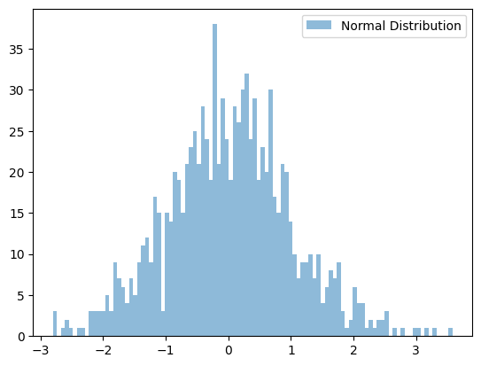
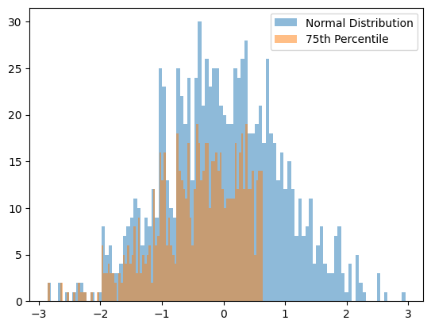
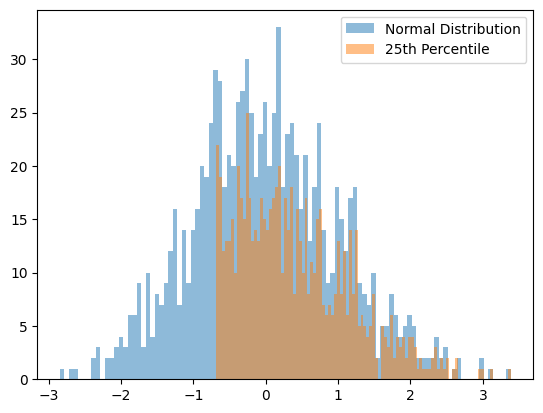

Cleaning Outliers
[1]:
import sys
import numpy as np
import matplotlib.pyplot as plt
sys.path.append(r'C:\Users\sergi\Documents\repos\geopy\geopy')
import preprocessing.outliers as outliers
Normal Data
[2]:
normal_data = np.random.normal(0, 1, 1000)
hist = plt.hist(normal_data, bins=100, alpha=0.5, label='Normal Distribution')

IQR Method
[14]:
noise = np.random.exponential(scale = 2, size = 1000)
plt.hist(normal_data + noise, bins=100, alpha=0.5, label='Data with Outliers')
plt.hist(outliers.IQR(normal_data + noise), bins=100, alpha=0.5, label='IQR applied d=1.5')
plt.hist(outliers.IQR(normal_data + noise, distance = 3), bins=100, alpha=0.5, label='IQR applied d=3')
legend = plt.legend()
Z-Score method
[18]:
noise = np.random.exponential(scale = 2, size = 1000)
plt.hist(normal_data + noise, bins=100, alpha=0.5, label='Data with Outliers')
plt.hist(outliers.Z_Score(normal_data + noise), bins=100, alpha=0.5, label='Z-Score applied')
legend = plt.legend()
Upper percentile
[19]:
normal_data = np.random.normal(0, 1, 1000)
hist = plt.hist(normal_data, bins=100, alpha=0.5, label='Normal Distribution')
hist = plt.hist(outliers.upper_percentile(normal_data, 75), bins=100, alpha=0.5, label='75th Percentile')

Lower percentile
[20]:
normal_data = np.random.normal(0, 1, 1000)
hist = plt.hist(normal_data, bins=100, alpha=0.5, label='Normal Distribution')
hist = plt.hist(outliers.lower_percentile(normal_data, 25), bins=100, alpha=0.5, label='25th Percentile')
